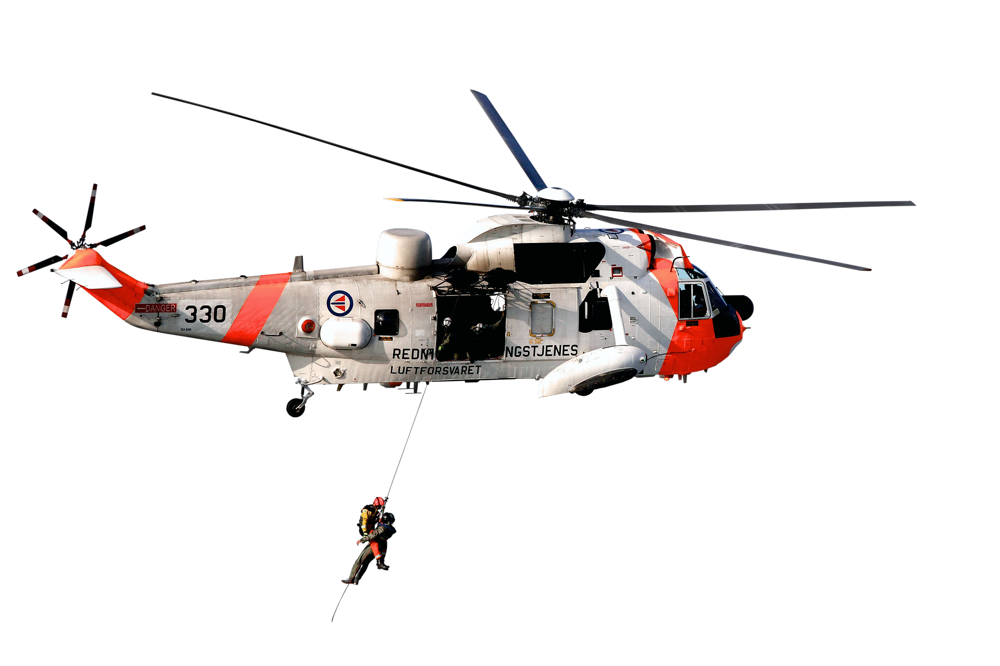
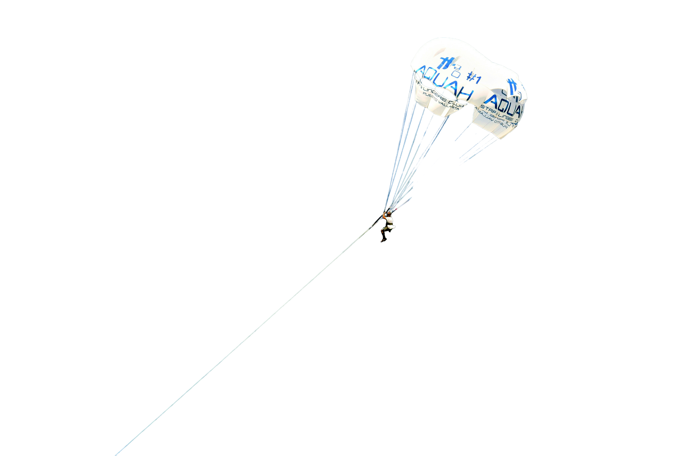
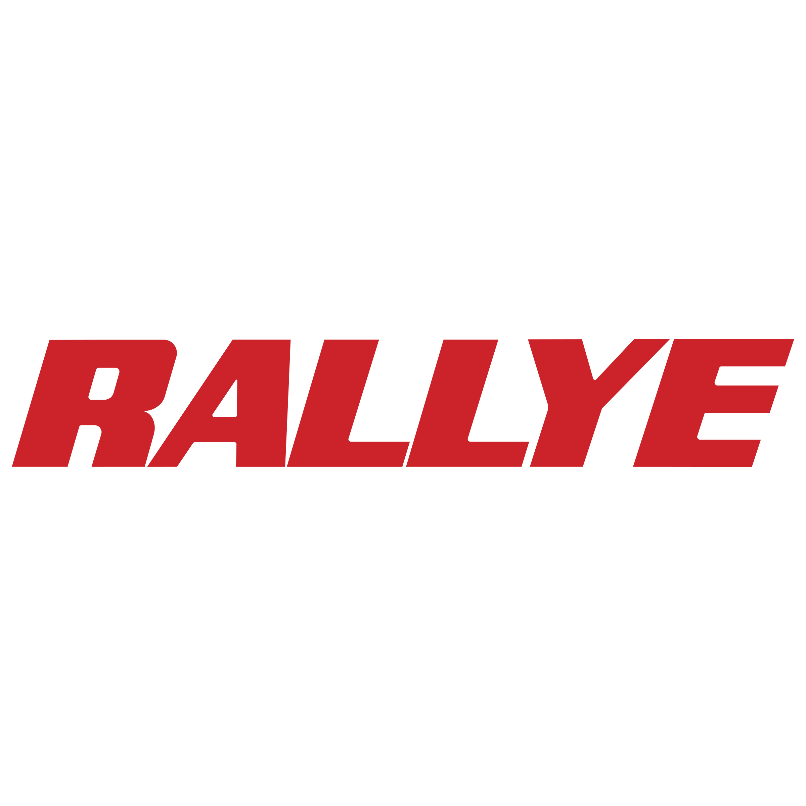
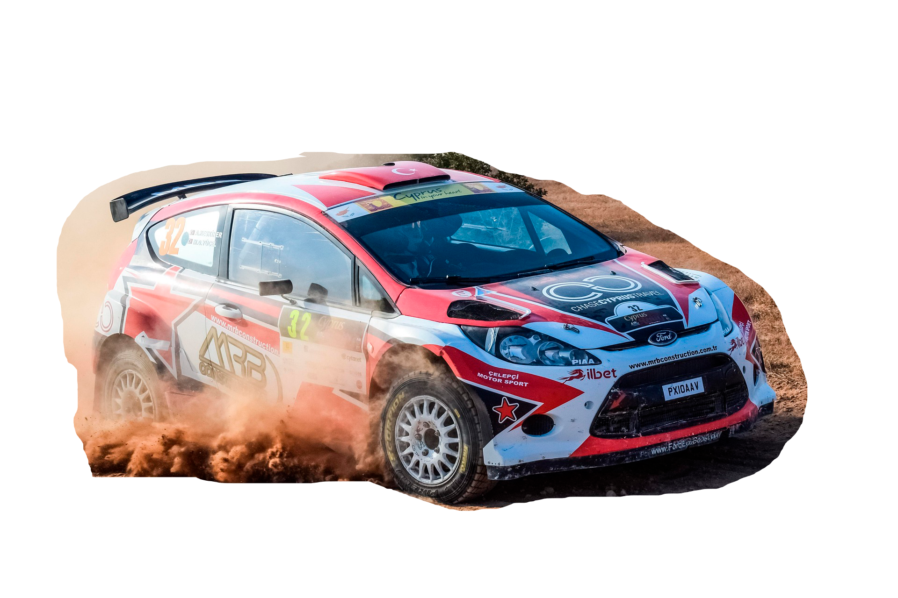

é um projeto de manipulação digital com foco em narrativa visual e ambientação climática extrema. A composição foi constrídau com múltiplas fontes de imagem, incluindo elementos de terreno, montanha, neblina e gelo, combinados para criar uma cena de rally em região glacial. O objetivo principal foi explorar o contraste entre movimento e ambiente, destacando o carro como ponto focal em meio à névoa densa, reforçada por texturas realistas e iluminação difusa. Todos os detalhes, como o castelo congelado, o clima extremo e a paleta fria, foram planejados para reforçar a tensão e o risco da corrida no setor mais crítico da competição. Edição completa feita no Photoshop








Created by Arthur morais — 2025 All visuals developed in Photoshop